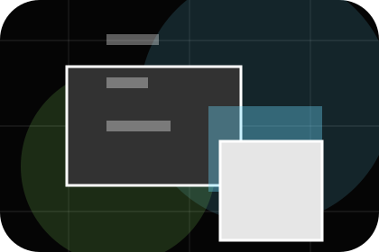
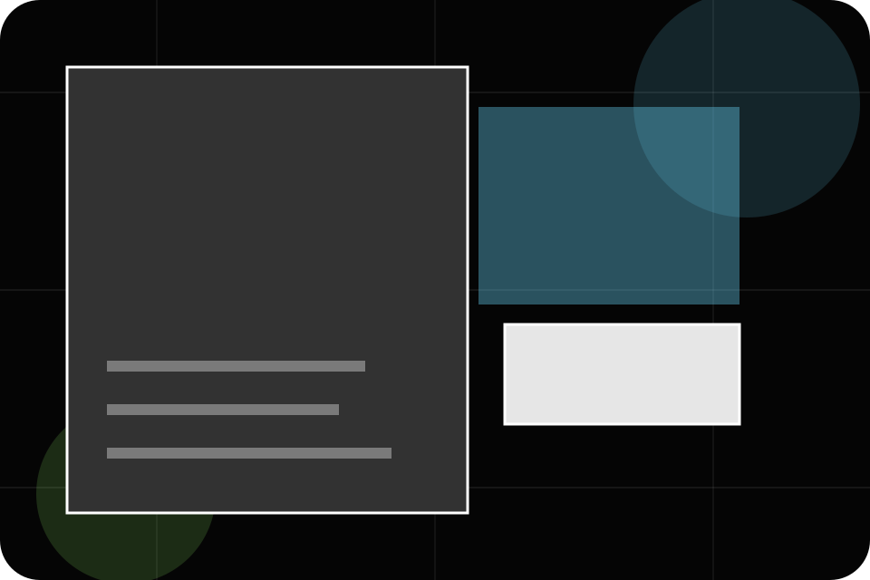
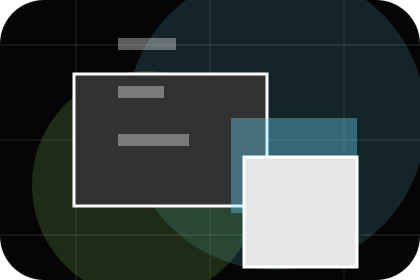
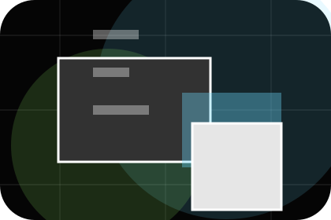
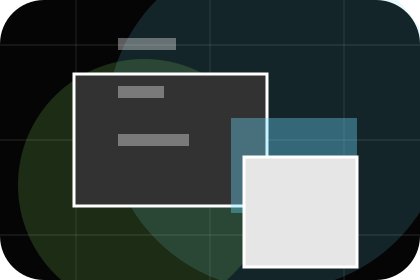
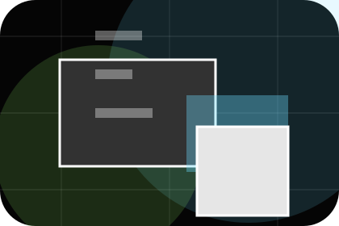
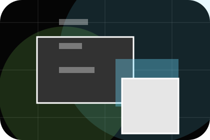
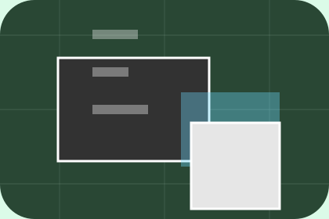

Start
How visitors begin this route and what detail is useful at the first step.
Process / 01
Process opens as a clear marketing decision hub: what Spark offers, who it helps, why it matters, and which route to take first.
The first screen combines positioning, proof, primary action, and fast internal navigation, so people can act immediately or compare the rest of the process route with context.
Immersive case-study hero
Select the closest route and Spark keeps the next step, proof, and follow-up expectation aligned with results and creative confidence.

Process / 02
Discover explains the operating sequence so visitors can see how the first request becomes a clear recommendation and follow-up.
The steps are written from the visitor side: what they do first, what Spark clarifies, what they receive, and how support continues.
Explore Process
How visitors begin this route and what detail is useful at the first step.
What Spark reviews, filters, or explains before recommending the next move.

What the visitor receives afterward, including support, proof, or a handoff to the next page.
Process / 03
Plan explains the operating sequence so visitors can see how the first request becomes a clear recommendation and follow-up.
The steps are written from the visitor side: what they do first, what Spark clarifies, what they receive, and how support continues.
Explore ProcessSpark structures plan around start, clarify, and a clear next route so visitors can compare the block quickly before they send a campaign brief.
Send Campaign BriefProcess / 05
Launch explains the operating sequence so visitors can see how the first request becomes a clear recommendation and follow-up.
The steps are written from the visitor side: what they do first, what Spark clarifies, what they receive, and how support continues.
Explore ProcessHow visitors begin this route and what detail is useful at the first step.
Process / 06
Measure explains the operating sequence so visitors can see how the first request becomes a clear recommendation and follow-up.
The steps are written from the visitor side: what they do first, what Spark clarifies, what they receive, and how support continues.
Explore ProcessHow visitors begin this route and what detail is useful at the first step.

What Spark reviews, filters, or explains before recommending the next move.

What the visitor receives afterward, including support, proof, or a handoff to the next page.
Process / 07
Optimise explains the operating sequence so visitors can see how the first request becomes a clear recommendation and follow-up.
The steps are written from the visitor side: what they do first, what Spark clarifies, what they receive, and how support continues.
Explore ProcessHow visitors begin this route and what detail is useful at the first step.
What Spark reviews, filters, or explains before recommending the next move.
What the visitor receives afterward, including support, proof, or a handoff to the next page.
Process / 08
Report explains the operating sequence so visitors can see how the first request becomes a clear recommendation and follow-up.
The steps are written from the visitor side: what they do first, what Spark clarifies, what they receive, and how support continues.
Explore ProcessHow visitors begin this route and what detail is useful at the first step.
What Spark reviews, filters, or explains before recommending the next move.
What the visitor receives afterward, including support, proof, or a handoff to the next page.
Process / 09
Scale explains the operating sequence so visitors can see how the first request becomes a clear recommendation and follow-up.
The steps are written from the visitor side: what they do first, what Spark clarifies, what they receive, and how support continues.
Explore Process

How visitors begin this route and what detail is useful at the first step.
Process / 10
Spark closes the process route with a clear action, a quick reminder of the value, and a low-friction way to send a campaign brief.
Visitors who are ready can use the primary action. Visitors who are still comparing can scan the section links, proof, and support routes before they send a campaign brief.
Send Campaign BriefThe final block keeps the choice simple: act now, compare one more proof route, or send enough detail for a focused response.
Send Campaign Briefresults and creative confidence
A marketing agency site with immersive black work panels, sharp case filters, results proof, and brief routes. Process ends with a direct path to send a campaign brief, plus enough context for visitors who still need to compare.

Send Campaign BriefInformation is provided for planning and should be reviewed for the final client, location, and operating rules.